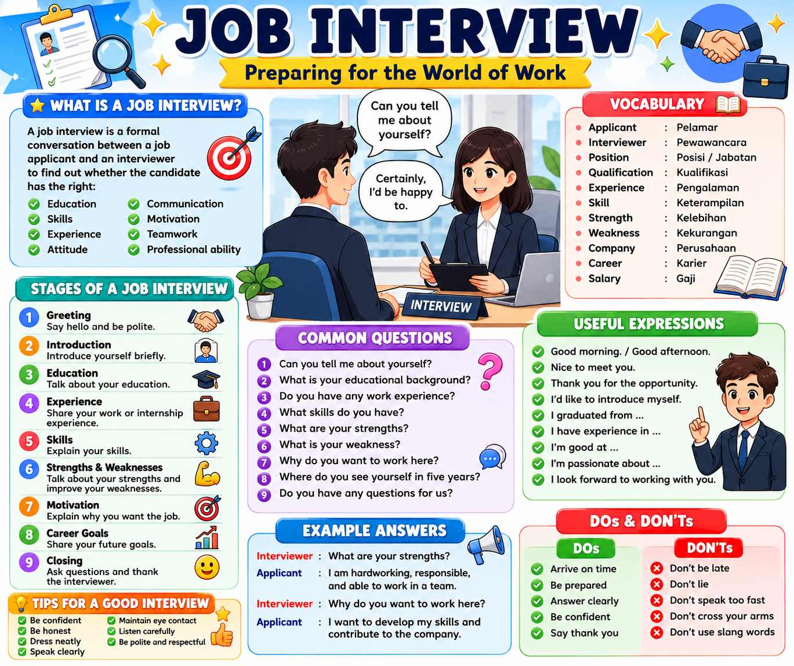

💼 Job Interview — Interactive Learning Video
Grade XII SMK • Preparing for the World of Work

Scene 1 • Introduction
👩💼
Interviewer
👨💼
Applicant
◀ Previous
▶ Play Lesson
Next ▶
🔊 Listen
🔊 Voice ON
1/10
🎙️ Subtitle / Voice-over
💡
Teacher tip:
Encourage students to repeat the model sentences aloud and adapt them to their own major, internship, and skills.